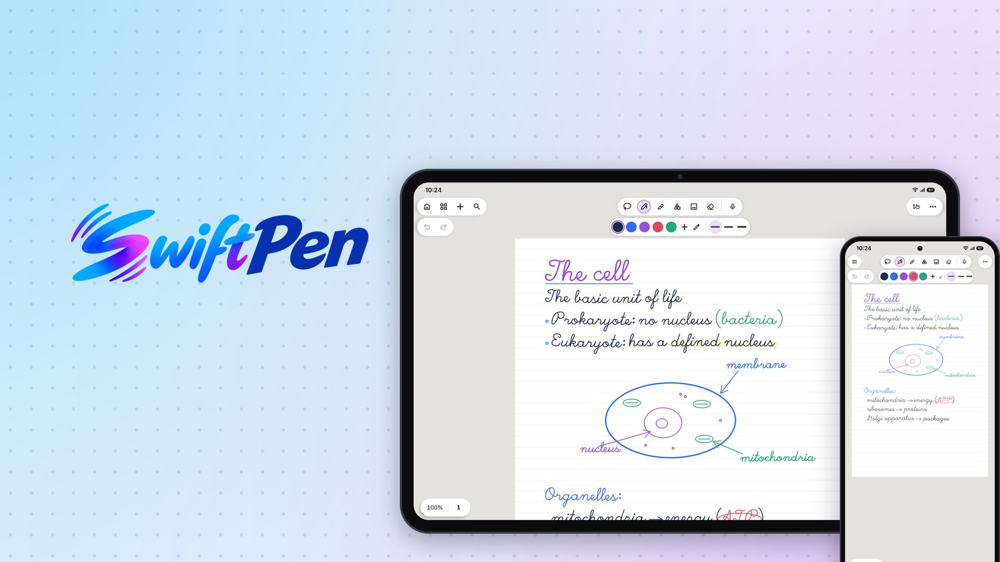

SwiftPen 1.1.2
9 de octubre de 2026
Esta versión corrige un error de la 1.1.1 que bloqueaba el Pro durante la beta.
Correcciones
- El Pro vuelve a ser gratis durante la beta. En la 1.1.1 salió bloqueado por error.
SwiftPen 1.1.1
9 de octubre de 2026
Esta versión incorpora distintos tamaños de hoja, grosor propio para cada pluma y varias mejoras de rendimiento y estabilidad.
Novedades
- Elige el tamaño de la hoja: A4, A5, A3, Carta o Legal, además de la orientación.
- Un PDF importado da a cada página el tamaño de su propio papel, sin recortes ni márgenes de un A4.
- Grosor propio para el Bolígrafo, la Caligrafía y el Lápiz, con botones −/+ junto al deslizador.
- Al borrar una grabación de audio ahora se puede borrar también lo que se escribió mientras sonaba.
- Inicio renovado: logo grande y centrado, con la barra lateral colapsada en vertical.
- Las notas horizontales se ven recortadas a su celda, con una insignia que las distingue.
Mejoras
- Las miniaturas de tamaño y de plantilla se dibujan a su escala real: un A5 ya no se ve del mismo tamaño que un A4.
- El interruptor "Ajustar a ángulos" explica mejor que endereza una forma ya reconocida, sin confundirse con "Forma perfecta".
- Los PDF pesados cargan más rápido: sin parpadeo al saltar de página y sin hojas en blanco al desplazarse.
Correcciones
- El resaltador ya no parpadea mientras se traza.
- Los enlaces internos de un PDF (como un índice) vuelven a funcionar en Android 15 y 16.
- Los enlaces de un PDF se ven con su color original, sin el azul forzado del editor.
- Se redujo el consumo de batería: la búsqueda manuscrita ya no reanaliza la nota mientras se sigue escribiendo.
SwiftPen 1.1.0
8 de octubre de 2026
Esta versión incorpora ayuda integrada en cada herramienta, SwiftPen en francés, más opciones para gestionar las páginas y diversas mejoras de estabilidad.
Novedades
- Ayuda integrada: cada herramienta y ajuste incluye un botón de interrogación con un vídeo breve que explica su uso.
- Se añadió el francés como idioma de la aplicación.
- Se añadió el giro de páginas a la derecha o a la izquierda, sin límite de giros.
- En la vista Todas las páginas ahora se pueden seleccionar varias páginas a la vez y quitar un PDF completo.
- Se implementaron los hipervínculos en los PDF: los enlaces de un documento importado ahora se pueden tocar.
- Compatibilidad nativa y probada con el HONOR Magic-Pencil 4 y 4S.
- Se renovó la introducción, con nuevas opciones y animaciones.
- Fondo de aurora: decora la biblioteca con los colores de SwiftPen. Es opcional y se puede desactivar en Ajustes.
Mejoras
- Cambiar la orientación del papel ya no gira lo escrito. Para girar una página completa, usa la opción Girar página.
Correcciones
- Cada página de un PDF importado conserva ahora su orientación.
- Al alejar el zoom, la página permanece centrada.
- Corregida la separación de renglones en el reconocimiento de escritura.
- Corregido un cierre de la aplicación al volver de cambiar el idioma en una nota con PDF.
- Al volver desde Ajustes abiertos dentro de una nota, ahora se regresa a esa nota.
- El estado de la sincronización se muestra en el idioma de la aplicación y ya no incluye la hora de otro servicio.
- El ajuste de la papelera indica con claridad cuánto tiempo se conservan las notas eliminadas.